Першим офіційним чемпіоном світу є Вільгельм Стейніц у 1886 році. Проте варто згадати, що до 1886 року були шахісти, які вважалися найсильнішими свого часу, проте не проводилися представницькі турніри, аби зафіксувати статус чемпіона.
У 1993 році через суперечку Каспаров організував окрему від ФІДЕ (офіційний сайт) - міжнародної організації з шахів, яка й проводить чемпіонські турніри організацію ПША, яка організовувала паралельні з ФІДЕ чемпіонські турніри аж до 2006 року.
| Чемпіони з 1886 по 1993 | ||||||||||||||||||||||||||||||||||||||||||||||||||||||||||||||||||||||||||
|---|---|---|---|---|---|---|---|---|---|---|---|---|---|---|---|---|---|---|---|---|---|---|---|---|---|---|---|---|---|---|---|---|---|---|---|---|---|---|---|---|---|---|---|---|---|---|---|---|---|---|---|---|---|---|---|---|---|---|---|---|---|---|---|---|---|---|---|---|---|---|---|---|---|---|
| № | Портрет | Чемпіон | Роки чемпіонства | Країна | ||||||||||||||||||||||||||||||||||||||||||||||||||||||||||||||||||||||
| 1 | 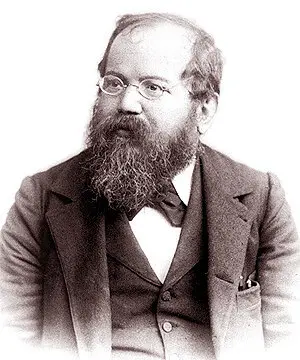 |
Вільгельм Стейніц | 1886—1894 | Австро-Угорщина / США | ||||||||||||||||||||||||||||||||||||||||||||||||||||||||||||||||||||||
| 2 | 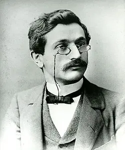 |
Емануїл Ласкер | 1894—1921 | Німецька імперія | ||||||||||||||||||||||||||||||||||||||||||||||||||||||||||||||||||||||
| 3 | 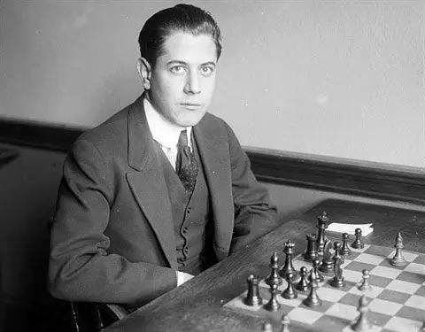 |
Хосе Рауль Капабланка | 1921—1927 | Куба | ||||||||||||||||||||||||||||||||||||||||||||||||||||||||||||||||||||||
| 4 | 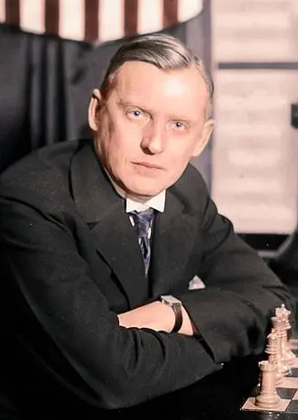 |
Олександр Алехін | 1927—1935, 1937—1946 | російська імперія / Франція | ||||||||||||||||||||||||||||||||||||||||||||||||||||||||||||||||||||||
| 5 | 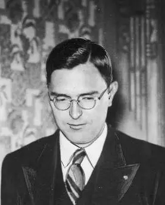 |
Макс Ейве | 1935—1937 | Нідерланди | ||||||||||||||||||||||||||||||||||||||||||||||||||||||||||||||||||||||
| 6 | 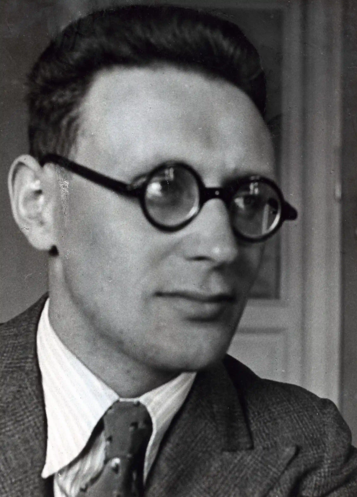 |
Михайло Ботвинник | 1948—1957, 1958—1960, 1961—1963 | СРСР | ||||||||||||||||||||||||||||||||||||||||||||||||||||||||||||||||||||||
| 7 | 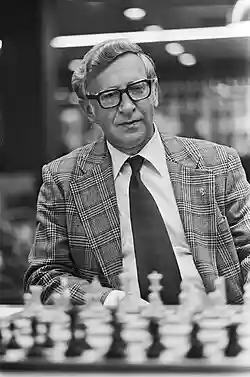 |
Василь Смислов | 1957—1958 | СРСР | ||||||||||||||||||||||||||||||||||||||||||||||||||||||||||||||||||||||
| 8 | 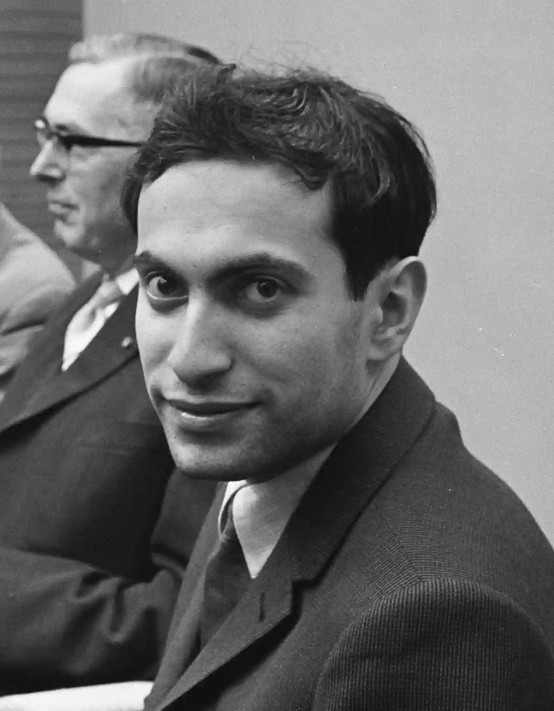 |
Михайло Таль | 1960—1961 | СРСР | ||||||||||||||||||||||||||||||||||||||||||||||||||||||||||||||||||||||
| 9 | 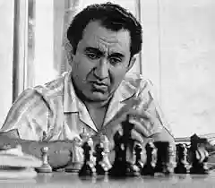 |
Тигран Петросян | 1963—1969 | СРСР | ||||||||||||||||||||||||||||||||||||||||||||||||||||||||||||||||||||||
| 10 | 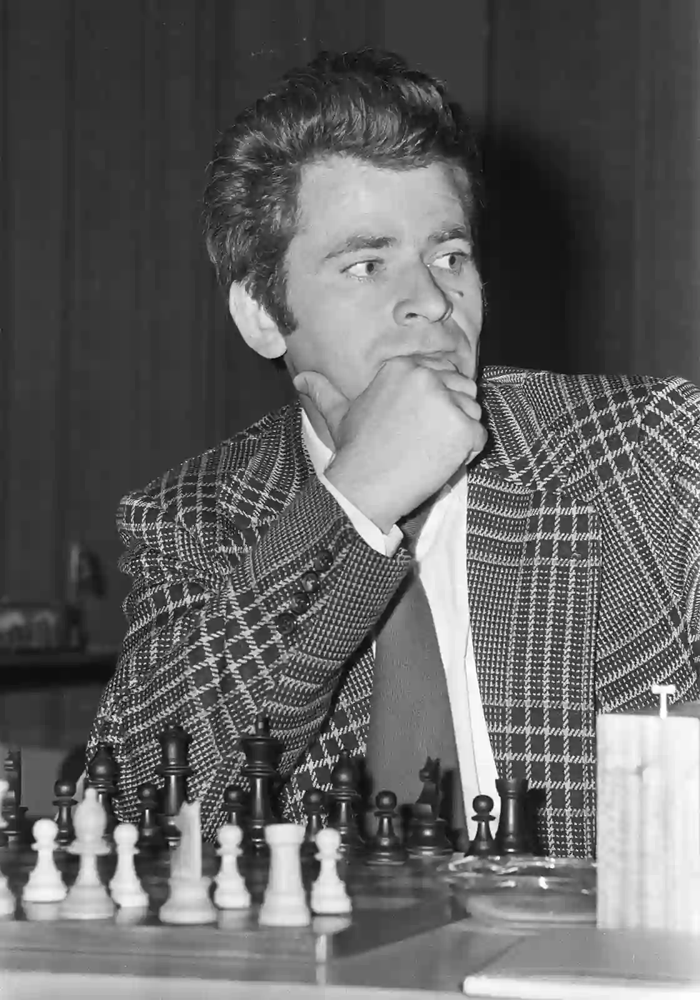 |
Борис Спаський | 1969—1972 | СРСР | ||||||||||||||||||||||||||||||||||||||||||||||||||||||||||||||||||||||
| 11 | 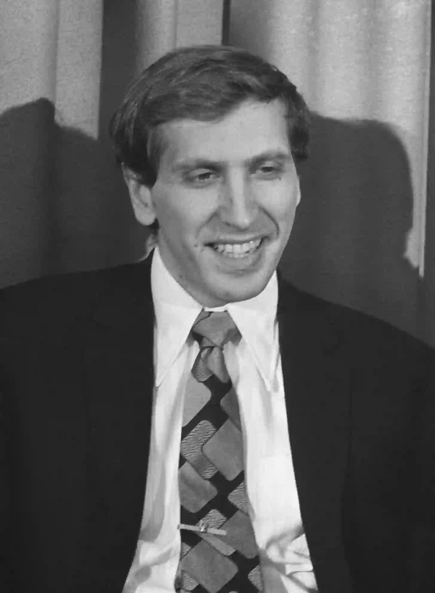 |
Роберт Фішер | 1972—1975 | США | ||||||||||||||||||||||||||||||||||||||||||||||||||||||||||||||||||||||
| 12 | 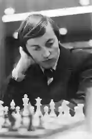 |
Анатолій Карпов | 1975—1985 | СРСР | ||||||||||||||||||||||||||||||||||||||||||||||||||||||||||||||||||||||
| 13 | 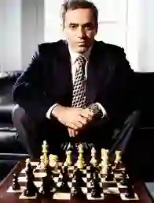 |
Гаррі Каспаров | 1985—1993 | СРСР / росія | ||||||||||||||||||||||||||||||||||||||||||||||||||||||||||||||||||||||
|
||||||||||||||||||||||||||||||||||||||||||||||||||||||||||||||||||||||||||
| Чемпіони з 2006 | ||||||||||||||||||||||||||||||||||||||||||||||||||||||||||||||||||||||||||
| 14 | Володимир Крамник | 2006—2007 | росія | |||||||||||||||||||||||||||||||||||||||||||||||||||||||||||||||||||||||
| 15 | Вішванатан Ананд | 2007—2013 | Індія | |||||||||||||||||||||||||||||||||||||||||||||||||||||||||||||||||||||||
| 16 | 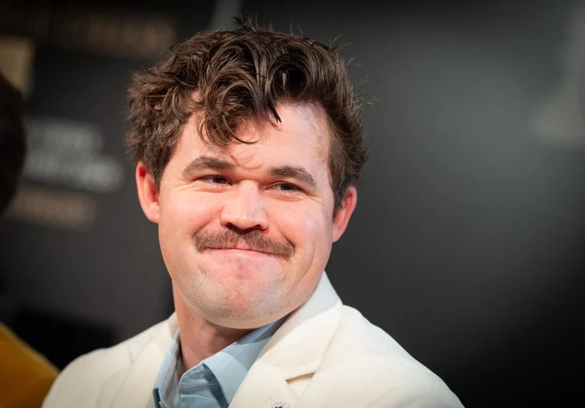 |
Магнус Карлсен | 2013—2023 | Норвегія | ||||||||||||||||||||||||||||||||||||||||||||||||||||||||||||||||||||||
| 17 | 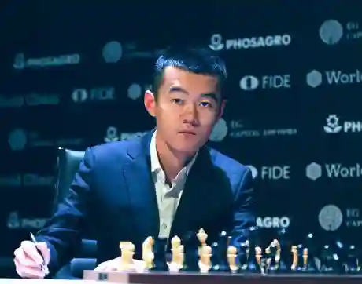 |
Дін Ліжень | 2023—2024 | Китай | ||||||||||||||||||||||||||||||||||||||||||||||||||||||||||||||||||||||
| 18 | 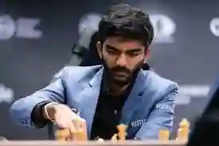 |
Доммараджу Гукеш | з 2024 | Індія | ||||||||||||||||||||||||||||||||||||||||||||||||||||||||||||||||||||||